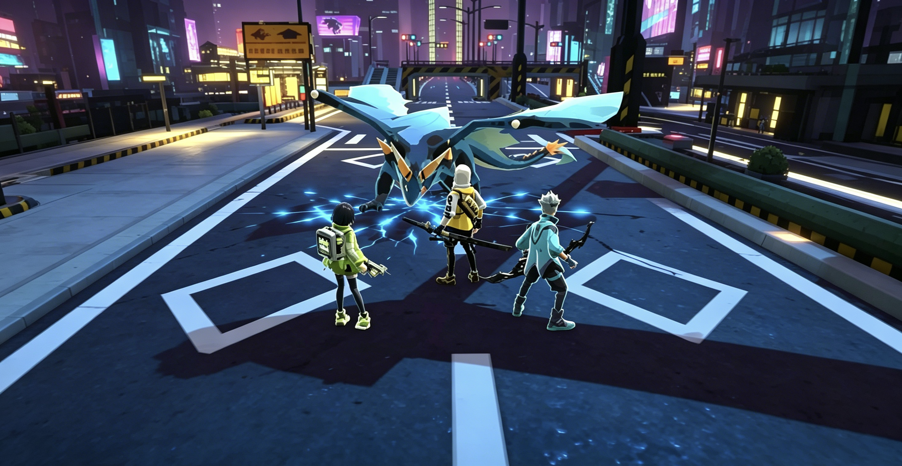

PBR 研发项目 《代号：龙击社》
《代号：龙击社》是一款未公开的研发中 PBR 项目，使用 Unity URP 管线，定位相当于《不休的乌拉拉》的升级版；因公司业务调整，项目组在 DEMO 阶段解散。
项目背景
作为《不休的乌拉拉》的升级方向，项目采用 PBR 流程与 URP 管线，追求更高质量的材质、光照与整体画面表现，目标是在保留轻松玩法基调的同时全面提升视觉品质。
我的职责
作为技术美术，负责 PBR 流程搭建、材质效果研发与渲染管线相关工作，探索卡通风格与 PBR 结合的表现方案，带来更精致的材质与光照渲染效果。
项目现状
项目停留在 DEMO 阶段，因公司业务调整项目组解散；相关技术积累沉淀到后续项目中。